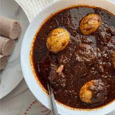
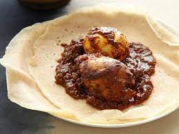

Doro Wet


The Doro Wet dish is one of the most globally recognized Ethiopian cuisine dishes. It is believed to have originated in the northern part of the country in the Amhara region. And us, being habesha wanted to introduce you to this exquisite dish full of amazing spices. Once you try it, your taste buds will be aching for more.
The dish takes about an hour and a half to complete, and is enough to feed 4 people. This dish is full of proteins, which makes it ideal for a post-workout meal.
Click Here to get a transcript of the video
Ingredients
- 4 medium-sized red onions
- 4 pounds chicken
- 3/4 to 1 cup Vegetable oil or any good cooking oil of your choice
- 2 tablespoon kibbeh (Ethiopian spiced butter)
- 2 tablespoons tomato paste optional
- 6 eggs hard-boiled
- 2 tbsp minced garlic
- 2 tbsp grated ginger
- 1/4 cup water
- salt to taste
- 1/2 cup of berbere spice
- 1 cup vinegar and 2 cups water to clean chicken
Steps
- Clean the chicken very well and soak it in water and vinegar.
Rinse and drain when ready to use.
- Boil the eggs, peel, and set aside.
- Finely dice the onions. You can use the food processor to save time.
- Add the onions to a pot over low to medium heat. The onions will sweat and
create the water they will simmer in. Continue to stir the onions to
prevent burning until they change color (light pink color). About 30 to 40 minutes.
When they are done, the water will evaporate, and the onions will begin
to stick to the bottom of the pot. - Stir in the oil, minced garlic, salt, and berbere spice. Stir well.
- Add kibbeh (Ethiopian spiced butter) and the tomato paste and stir.
- Slash the chicken in two or three places. This step is optional,
but it will allow the flavors of the stew to penetrate the chicken.
Add the chicken inside the stew and stir. - Add the water and cook on medium heat for 30 to 40 minutes stirring
occasionally to prevent burning. Continue to cook until the stew
thickens up and the chicken becomes tender. - Stir in the eggs and leave to cook for another 15 to 20 minutes.
- Let it rest until the heat is manageable.
Note: Dorowet is typically served with Injera or bread.
Nutritional Facts
| Component | Amount | %Daily Value |
|---|---|---|
| Total Fat | 54g | 70% |
| Saturated Fat | 32g | 158% |
| Cholesterol | 399mg | 133% |
| Sodium | 2859mg | 124% |
| Total Carbohydrate | 24g | 9% |
| Dietary Fiber | 12g | 43% |
| Protein | 33g | 80% |
Comments